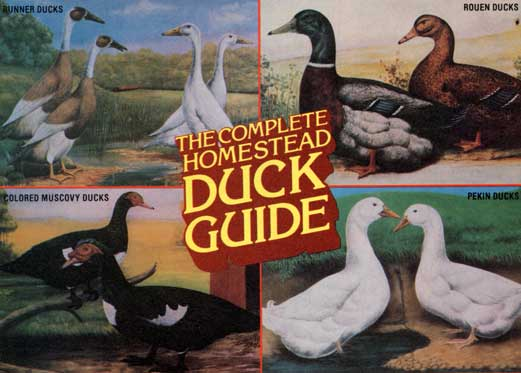

Chickens are fine, but-in many ways-waterfowl are a whole lot better!
Ducks can be a delightful-and valuableaddition to your farm, homestead, or even urban/suburban back yard! The waterfowl require less initial care than do chickens, are susceptible to fewer diseases, and grow to eatin' size sooner, too. Furthermore-besides providing succulent meat for your tablethese attractive feathered friends produce eggs that are more nutritious than (and just about as versatile as) hens' eggs. On top of that, ducks will forage much of their own food . . . do wonders for insect and weed control . . . give you pounds of fluffy down for pillows and comforters ... and-if you want companionship-become devoted pets that can live as long as 20 years!
Most of the approximately 10 million ducks raised commercially in the U.S. each year are White Pekins. These large fowl-which reach a weight of seven delicious pounds in eight short weeks-are poor setters but fair egg producers. However, because of their nervous dispositions, Pekins require a calm environment to attain maximum egg production.
Another large white variety, the Aylesbury, is the most popular duck in England. Though birds of this breed produce few eggs and seldom show any interest in set ting, they are very tasty and somewhat less nervous than are White Pekins.
If you like the unusual, the royal-looking Crested Duck with its fancy topknot is a good layer and grows to eating size very quickly, too. The Brown and Khaki Campbells (whose eggs have a very delicate, pleasing flavor) and three graceful Indian Runner varieties (White, Penciled, and Fawn) are also fine producers: They can usually be relied upon to lay an egg a day all year long. However, at eight to ten weeks-the prime, tenderest age for the table-members of these species weigh only 3-1/2 to 4-1/2 pounds.
Rouens (they're colorful, quiet, and docile), Cayugas (a hardy breed of American origin), Swedish Blues (which are extremely hardy and easy to pluck), Buffs (a good general-purpose breed), and Calls (small, noisy, "single-serving" bantams) all produce excellent meat, but few eggs. However-because these species sport innumerable tiny, dark pinfeathers-some people find them less attractive than other ducks when "dressed" for the table. (Attempts to camouflage these "spots" have led to the creation of many delicious duck sauces!)
All of the above varieties were developed from the wild mallard, but the Muscovy is a different breed altogether. Al most as large as a goose, this South and Central American bird-domesticated since the time of the Incas-is decked out in plumage of white, blue, chocolate, buff, or silver. The Muscovy is a great forager, and one bird can quickly free a large garden of snails and slugs. It's also one of the best setting waterfowl a homestead duck raiser can choose to own. In fact, a single female can hatch and rear as many as 25 to 30 ducklings annually.
Muscovies are often called the "quackless" duck (and considered a good choice for urban or suburban areas) because the drakes can only hiss when upset ... though the females will occasionally squawk when frightened. These south-of-the-border ducks are strong fliers, however, and should have their wings clipped or pinioned in order to keep them confined to the yard. Muscovies are an ideal breed for home use, though, as they reproduce readily and their highly flavored meat is downright delicious.
(If you'd like to learn more about different breeds and their feed and shelter requirements, you might want to order a copy of Ducks and Geese in Your Back yard: A Beginner's Guide by Rick and Gail Luttmann, which is available from Mother's Bookshelf for $5.95, plus 95 cents postage and handling.)
After you select a breed, you must make some preparations for the arrival of your fowl. Remember that webfoots require more space than do chickens, so allow at least 1/2 square foot of floor space each for ducklings up to two weeks of age ... twice that amount for two- to four-week-olds . . . two square feet for one- to two-month-old "juniors" . . . and a full five to six square feet for mature birds.
Whether you keep your flock fenced in or let them roam free, the ducks must have some kind of well-ventilated-but draft-free-shelter: An old dog house, chicken coop, small shed, or (in warm climates) a simple lean-to will do.
You must also keep in mind that waterfowl don't sleep all night as chickens do, and that moonlight (or the beams from a street lamp or porch light) shining into their quarters can occasion restless and noisy nights.
In addition, while it's true that most breeds can withstand very low temperatures, ducks have poor circulation in their feet and can become stubfooted or otherwise crippled without a fairly warm (around 45°F) winter home. Plenty of straw in their shelter and in the yard around their feeding area is also necessary to prevent frozen foot problems and-during the summer-you should provide the birds with some refuge from the hot sun (shade trees are usually sufficient for this).
And don't let the lack of a natural water site stop you from raising a few ducks. Your mini-flock will be eternally grateful to you (and much healthier), however, if you provide them with some sort of artificial swimming area-a concrete pool, sunken tub or cistern, old bathtub, or hard-plastic swimming pool-and clean the container once a week. (And, of course, your garden will prosper when drenched with the discarded manure-rich water!)
Wild ducks eat a wide assortment of foods . . . including plants, seeds, insects, fish, crayfish, worms, and even an occasional mouse.
Domesticated ducks, too, will forage for most of their food whenever possible, but-if you want to keep your birds plump-some diet supplements should be provided. Such "storebought food" can be in the form of commercial waterfowl "chow" (pellets are best) or mixed whole grains such as corn, wheat, barley, and oats. Corn is by far the birds' favorite meal - and also a great winter warmth provider-but "maize" alone won't give them the balanced diet they need. Remember, too, that you must never give your ducks any commercial feed with chemical additives (or with more than 20% protein), since such a dinner might kill young birds and cripple older ones.
Greens are also extremely important and should make up about a third of the bulk of a duck's diet. (You won't have to worry about what to do with the excess vegetables and fruit from your garden and orchard if you have waterfowl around!) When no greenery is available, feed the birds rabbit pellets of pressed alfalfa. (Clover-before it blooms-and alfalfa will increase the fertility of your flock.)
Unless your ducks range freely, feed them (give the birds as much as they can eat in 15 minutes) twice a day. If they go out foraging, though, it's generally best to feed them once in the evening.
But-whatever and whenever your birds eat-be sure they get enough grit (coarse sand or fine river gravel, for example) or the food will simply pass through them without being ground up in their gizzards. Ducks without access to grit will lose weight and be hungry all the time, and their droppings will be large and puffy instead of the "proper" watery splotches. (Calcium-such as is found in ground oyster shells-is also essential for layers, but can be harmful to immature fowl.)
Along with food, ducks must always have fresh water nearby . . . to keep them from choking on their grain. The pond, tub, or whatever you use should be deep enough, too, to allow the birds to dunk their heads. Otherwise, their nostrils may get clogged, and they can get an infection called "sticky-eye".
Providing good nutrition, clean water, sufficient space, and good sanitation at all stages of a duck's development will prevent a host of problems. For example, brooder pneumonia (aspergillosis)-caused by a fungus sometimes present in litter-can usually be avoided if you make sure your flock's litter and brooder house are kept dry. Strict sanitation-and the avoidance of mudholes and slimy areas in the range penswill also help to insure against fowl cholera (Pasteurella multocida). To prevent botulism, which is caused by bacteria in decaying plant material, simply maintain clean facilities (both living and swimming) and be sure to feed the birds only fresh-never wilted or rotting-vegetation.
Feather pulling-a problem which will sometimes begin when the ducks are about four weeks of age-usually indicates overcrowding or dirty, food-spattered down.
Once you've adequately prepared for your duck venture, you may begin in any of three ways: Incubate a "setting" of eggs ... buy day-old ducklings ... or-probably the simplest of all-obtain an almost-grown trio (two females and a drake) and let them raise a family. In order to get your ducks to reproduce, however, it's best to have water on which they can mate. Some birds (Muscovies in particular) manage the act without a place to swim, but access to a body of water will increase your trio's production.
Ducks (except for the ever-ready Runners and Campbells) will generally only lay eggs from early spring to late summer .. but don't expect any eggs from your females for a few weeks after they've been moved to a new location, or while they get used to a new drake. (Some breeds may even require a year of "settling-in" before they decide it's time to have children.) To help your newcomers feel at home, keep them in a fenced-in area or building until they accept their new quarters.
Should you plan to eat your ducks' eggs rather than hatch them, you can put the nest boxes (which the birds may or may not choose to use, however!) any place that's convenient for you. These should always be covered on top to protect the eggs from flying predators, such as jays .. . and be secluded enough to give the mother a sense of being hidden.
Duck eggs have large yolks and taste very much like chicken eggs . . . only richer and better. One duck egg may be substituted for two chicken eggs in cooking and serving. (Remember, though, that they'll toughen if overcooked when they're fried or made into omelets . . . and that their whites don't whip up very well.)
If you expect to raise ducklings, on the other hand, locate the nests within 100 yards of a water source so the mother can take a dip now and then and keep the eggs moist. Also, have about an inch of dirt in the bottom of each box, and a layer of straw or hay on top of that. (The dirt helps insulate the duckling-to-be and maintain the proper humidity.)
As often as not, the ducks will lay their eggs in depressions in the grass along the pond bank. To encourage them to lay in your nesting boxes, put any stray eggs you find in the containers. Don't, however, take up the eggs every day. Instead, collect them as you locate batches of three or four.
And remember that waterfowl won't beg in setting until they've laid their complete clutch of eggs. This "delaying action" assures that all the ducklings will hatch out within approximately 24 to 48 hours of each other and enables mom to take the whole gang down to the water a short time later. (Duck eggs hatch in 28 days ... except for Muscovies, which often take 35.)
Remember, too, that a mother duck will attack anything or anyone if she's provoked while nesting or caring for her young. Your "midwife" job is to do nothing other than set out food and water, as most ducks will handle the rest of the affair very efficiently.
If you can't get almost mature ducks (which are usually available in the late summer and early fall)-or if your birds seem uninterested in brooding-you might obtain a "setting" of eggs to hatch yourself.
Duck eggs are very porous, and dirt and bacteria can penetrate the shells and harm the embryos ... so you'll have to clean any soiled eggs with lukewarm water or a warm, damp cloth. (Don't use detergents, as they'll remove a film that retains moisture and provides the shells with an antibacterial shield.)
You can store the settings-small ends down-in egg cartons in a cool (50-60°F) area with about 75% humidity. To keep the yokes centered, elevate alternate ends of the carton each day . . . and try to gather-and start incubation of-your entire clutch within a week. After that, the number of hatches begins to decline, andonce you've stored your eggs for two weeks-your success rate will be just about nil.
Commercial duck incubators are available and should be used according to the manufacturer's recommendations. You can use a chicken incubator, too, but you'll have to allow for the larger size of the duck eggs. Also, you must keep your incubator meticulously clean to avoid infant duck deaths.
Remove the eggs from storage five to six hours before they're to begin incubation ... to allow them time to warm to room temperature before you start your hatch. Then, be sure to turn the eggs-always keeping the small ends down-at least three times a day. (By putting a mark on one side of the eggs, you can tell which ones you've rotated.) Put a pan of water in the incubator to maintain the necessary humidity, and spray the eggs with warm water twice a day. (If you don't, the shells will be too hard for the ducklings to "pip" their way out of.) Don't move the justhatched babies into the brooder until they've rested and their down has dried and fluffed out.
In lieu of a mechanical incubator, you can use a setting hen. However, since chicks hatch in three weeks-while ducks require four-the hen may tire of the job unless you start her in the first week of broodiness. (A good hen can usually hatch eight to ten duck eggs.) Keep food and water near throughout the hatching period so the surrogate mother won't leave the nest for long periods and permit the eggs to get chilled . . . and be sure to moisten the eggs with warm water daily.
Since "Mom" is whatever creature the ducks first see and "imprint" after hatching out, they and the silty hen will have no trouble accepting each other . . . at least until the ducklings decide to take their first swim!
Hatching eggs can be a bit of a gamble, though, so you might prefer to purchase day-old ducklings and brood them. (If there are no reliable duck hatcheries in your area, write to Willow Hill Farm and Hatchery, Dept. TMEN, Richland, Pennsylvania 17087 for a price list. This firm will airfreight you a bunch of tiny quackers within a day of their birth.)
Whether you use a wire-floored commercial brooder, a hover type, or a homemade device, give special attention to temperature during your birds' first few weeks of life. Start the heating unit a day before the ducklings arrive and stabilize the temperature at 85-90°F. If you use a hovertype brooder, raise the hover three to four inches and brood only half as many ducklings as you would chicks.
Actually, any good-sized packing box equipped with an electric light bulb for heat makes an adequate brooder. Place straw or some rough paper on the bottom of the box. (Newspapers are too slick and can cause leg injuries, and-since baby ducks are born hungry-they might eat sawdust or ground-up absorbent litter.) And be sure to hang the bulb so it doesn't touch any combustible materials.
Generally speaking, you can lower the temperature to 80-85°F after the second week .. . and to about 75°F the following week. After that, 65-70°F will suffice. It's best, however, to watch the birds for indications of needed temperature changes: If they're noisy and tend to pile up, raise the temperature, and if they move away from the heat, reduce it. Too much warmth will delay growth and feathering ... while too little can cause crowding and trampling, and the loss of a number of ducklings.
During the brooding period, replace wet or moldy litter frequently . . . because accumulated manure can burn the ducklings' breasts, and damp litter actually encourages diseases. To avoid chilling, use a wire guard over your waterers so the young birds can't get wet during the "down" stage. Remember also that, because of the construction of the ducks' nasal passages, they must be able to submerge their bills when drinking. Hence deeper waterers must be provided as the waterfowl grow.
You can substitute chick rations for duck food, but only if the feed contains no chemical additives whatsoever! Any chemicals or antibiotics will be lethal to ducklings.
If you can't get an additive-free ration or buy regular commercial baby-duck food, you can make up your own "formula" with rolled oats, cornmeal, wheat middlings, and a source of extra protein (such as soybean, fish, alfalfa, or cottonseed meal). However, you must never allow this "mash" to get stale or moldy . . . and be sure to mix it with some grit. DO NOT FEED YOUR DUCKLINGS ANY WHOLE GRAINS UNTIL THE FOWL ARE AT LEAST A MONTH OLD! Cut the small birds' greens into one-inch pieces, and be sure the vegetation hasn't been sprayed with pesticides. (Though it may seem a little cannibalistic, another good duckling food is a ration of finely diced hard-boiled eggs.)
One other caution . . . there's only one time a duck doesn't take to water: Homehatched and/or-brooded babies should be kept out of the rain and not allowed to swim until they're six weeks old, because their down won't shed water and they can easily become chilled. If your babies are brooded by a mother duck, however, this is no problem ... since the oil from her feathers will rub off onto their fluff and give the little ones some protection.
Four-week-old ducklings may be let out to range in a pen-a fenced yard, 15' X 20', can accommodate 20 ducklings or eight mature birds-and their partial freedom will alleviate any space problems you may have and permit the quackers to forage for part of their food.
After the young ducks are completely feathered out, they may be allowed to roam ... but the growing birds should-until they reach full maturity-still be fed three times a day at regular intervals and have a constant source of clean water available. You must also provide some sort of lean-to, so the "adoles cents" can get away from sudden storms.
Full feathering also means that-if the birds weren't pinioned when they were a day old-the feathers on the tip of one wing should be clipped enough to keep your fowl from flying away.
Slaughtering is never a pleasant task, but it's the only way to get homegrown duck an orange on your table. Besides, young ducks are about the tenderest fowl you can eat . . . and even older birds (particularly Muscovies) have a wonderful flavor all their own.
However, when eyeing your ducks for dinner, remember that a bird heavily into a molt is nearly impossible to pluck. This job is easiest just after the first feathering. Mallard derivatives are generally too tough to eat after 17 months, and Muscovies-which mature later-become "stringy" after they reach an age of 20 months.
Confine the to-be-butchered bird for at least one night without food, but with plenty of water. When the fateful day comes, you can lay the duck on a block . . . hold it with a steady grip (or solicit help for that job) . . . and chop off its head. Like chickens, ducks will flop around for a minute or so after they're killed-and this activity can bruise the skin-so tie your bird up by the feet immediately to let it bleed, or throw a cardboard box over the duck to keep it contained.
Other folks think the best solution is to hang the duck by its feet and sever the neck just beneath the lower bill. When the bleeding ceases, you can cool the bird quickly in the refrigerator and pick it while it's dry if you want to preserve the feathers and down.
Killing, of course, only takes a few minutes . . . but you can count on an hour or so of steady work when you pluck and eviscerate a duck. Scalding, a method which some folks prefer, may reduce the quality of the meat and doesn't work as well on ducks-which have watershedding feathers-as it does on chickens. Also, if you leave the bird in boiling water too long, its skin will tear easily.
As a compromise, you might dip the bird into cold water until the feathers are wet, then dunk it-for a minute or so-into 10 gallons of 160°F water to which you've added 1/2 cup of vinegar, a tablespoon of detergent, and a tablespoon of baking soda.
When you're ready to pluck, simply grasp the feathers close to the skin and pull 'em out! Be sure to have a steep-sided container ready for feathers and down-and that there aren't any drafts in your work area-or you'll end up in the middle of a downy blizzard.
After a rough picking, dip the duck into warm water which has a film of melted wax or paraffin on top. Then immerse the bird in ice water, and the wax can be peeled free to remove pinfeathers and down. Another way to loosen such problem feathers is to rub the "roaster's" body with fine cornmeal.
(Some people avoid the whole plucking process by skinning the duck-and removing much of the fat along with the skin-but others feel this method detracts from the flavor of the bird and dries out the meat.)
Once the duck is cleaned, place it in cool water to keep it soft until you're ready to proceed with the actual dressing process.
In order to prepare your duck for the oven, lay the plucked bird on clean newspaper and-with a very sharp knife-cut off the feet and the lower legs at the first joint. Excise the oil sacs on the upper side of the tail as well.
Then remove the vent under the tail, and make a clean incision from the vent hole to the tip of the breastbone. Next, slit the skin on the back of the neck, pull it away from the flesh, and cut the neck off close to the body. Remove the crop and windpipe by pulling 'em out and cutting 'em off . . . again, as close to the body as possible.
Now insert your hand into the large incision and carefully work the viscera away from the inside walls of the body. Pull the contents out gently, being careful not to break the gallbladder: a tiny, green sack on the liver. If this should burst, discard the liver or any portion of it that takes on a green color. Make sure the lungs and any remaining parts of the windpipe are removed. Separate the liver, gizzard, and heart carefully. Massage the blood clot from the heart and cut the liver away from the intestines. To clean the gizzard, cut the fat and membrane away . . . then make a gash in the thickest part, cutting to-but not through-the lining. Remove the inner sac and discard it.
Clean the inside of the duck by running water through it, and wipe the outside of the carcass with a damp cloth. Place the bird in the refrigerator for 12 to 24 hours to give the muscles time to relax and become tender, then either cook or freeze your waterfowl feast. (You might want to store the giblets separately from the ducks: Such organs will only keep well for about three months, while the bird itself can be safely frozen for at least six.)
A roast duck is a treat fit for anyone's table. To stuff the bird, fill the body cavity loosely with your favorite dressing and pin the incision together (pins with colored heads are easier to see when you want to remove them). Next-starting at the ventlace a length of string under the head of the first pin, under the tip of the second, under the head of the third, and so on . . . until you reach the last pin. Then work your way back to the vent, where you can tie a knot. (When the bird is cooked and the pins are removed, the string will just fall away.)
Stuff the neck cavity, too, and draw the loose skin over the opening, fastening it to the back with a pin. Finally, tie the legs together by encircling the body with the string.
Salt the bird lightly, pierce its skin with a meat fork, and roast it in an uncovered pan (use a roasting rack!) in a moderate oven. (At 325°F, figure on 15 minutes per pound if the bird is young, and 20 minutes per pound for older ducks. Also, remember that one pound will equal one serving.)
All in all, you're bound to be delighted with ducks, because-aside from providing you with vitamin-packed eggs and holiday dinners all year long-they're easy to care for . . . fun to watch . . . great insect and weed controllers . . . and a real pleasure to get to know.
After all, the birds aren't called "our webfooted friends" for nothing!.
|
 |
|
|